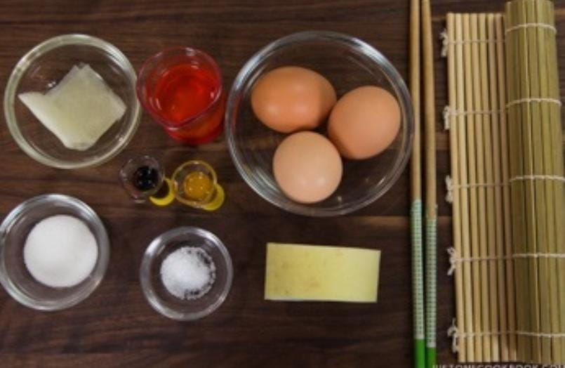

Tamagoyaki
Home
Tamagoyaki (卵焼き or 玉子焼き) is a sweetened Japanese rolled omelette that resembles mini bars of golden pillows. With a slightly sweet taste and custardy texture, tamagoyaki is well-loved amongst Japanese children and adults alike. You’ve most likely tasted the rolled eggs as part of a Japanese-style breakfast or as a side dish in a bento (Japanese lunch box) or atop sushi.
Ingredients
3 large eggs
2 Tbsp neutral-flavored oil
1½ sheets nori (dried laver seaweed)
3 Tbsp dashi
2 tsp sugar
1 tsp soy sauce
1 tsp mirin
2 pinch kosher salt
3 oz daikon radish

Nutrition Facts
Calories 267
Total Fat 6.27g(8%)
Cholesterol 38mg(13%)
Sodium 998mg(43%)
Total Carbohydrate 35.13g(13%)
Vitamin C 32.3mg(36%)
Vitamin A 35mcg(4%)
Procedure
Gather all the ingredients.
Gently whisk the eggs in a bowl. It's best to "cut" the eggs with chopsticks in a zig-zag motion; do not overmix.
In another bowl, combine the seasonings and mix well.
Pour the seasonings mixture into the eggs and whisk gently. Then pour the mixture into a measuring cup with a spout and handle so that it'll be easier to pour into the frying pan.
Heat the pan over medium heat, dip a folded paper towel in the oil, and apply some of it to the pan. Put a drop of the egg mixture in the pan to see if the pan is hot. When you hear a sizzling sound, the pan is ready.
Pour a thin layer of the egg mixture into the pan, quickly tilting the pan so that the egg mixture coats the entire cooking surface.
Poke any air bubbles to release the air. After the bottom of the egg has set but is still soft on top, start rolling the egg into a log shape from one side to the other, starting from the far side of the pan and rolling toward the pan handle.
Move the rolled omelette to the far side of the pan where you started to roll, and apply more oil to the pan with a paper towel, even under the omelette.
Pour in a thin layer of the egg mixture to just cover the bottom of the pan again. Make sure to lift the omelette to spread the mixture underneath.
When the new layer of egg has set and is still soft on top, start rolling it from one side to the other.
Move the rolled omelette to the side where you started to roll and apply more oil to the pan with a paper towel, even under the omelette.
Pour in a thin layer of the egg mixture to just cover the bottom of the pan again. Make sure to lift the omelette to spread the mixture underneath.
When the new layer of egg has set and is still soft on top, start rolling it from one side to the other.
Repeat the process. This is now the third round.
This is the fourth round. Pour in more egg mixture and make sure it thinly coats the bottom of the pan, including under the rolled omelette.
Continue rolling it into a log shape. Tip: Control the temperature of the pan by lifting the frying pan rather than adjusting the stove heat. If the heat is too weak, the egg will stick to the frying pan, so be careful.
The is the fifth round. Then the sixth round.
You can brown the omelette a little bit.
Remove it from the pan and place the omelette on a bamboo sushi mat. While it’s still hot, roll up the omelette in the bamboo mat to help set its shape. Let it stand for 5 minutes.
Slice the omelette into ½-inch (1 cm) pieces.
Peel and grate the daikon. Gently squeeze the water out. Pour the soy sauce over the grated daikon and serve with the Tamagoyaki.
You can put the Tamagoyaki in an airtight container and store in the freezer for up to 2 weeks. Defrost overnight in the refrigerator or microwave.
Expert Guide
Back ←
Scroll to Top ↑